17 שנה של מחשבות, שאלות, ומסע
The Presence
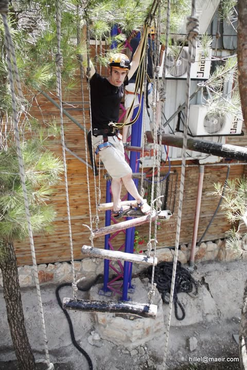
מיהודה ושומרון — צילום אישיילד שבגיל 3 שאל "מניין הרוע?" — כאן הוא מחפש שפה לשאלות שכבר חי בתוכו
" אני לא חושב שהמחקר הזה שולל את הבחירה החופשית מיסודה. הוא רק מעיד שאנו מסוגלים לחקות את תחושת הבחירה, לייצר זיוף, אשלייה. גם החומר הוא מטאפיזי במובן מסויים.
" חברים יקרים והורים יקרים ושאר חברי משפחה יקרים וכולם! בקרוב אצא למסע קטן מחוץ לבית, העקרון הוא שהכל מותר חוץ מלדרוך בבית. מכיון שאני לא איש של טיולים — אשמח לייעוץ.
" אני חושב שהאפקט החינוכי של הורים על ילדיהם הוא תעלומה מוחלטת. ככל שהתינוק קרוב יותר לרגע הלידה — הרשמים שהוא קולט אינם אנליטיים או מילוליים, רק החיים עצמם.
The Revelation
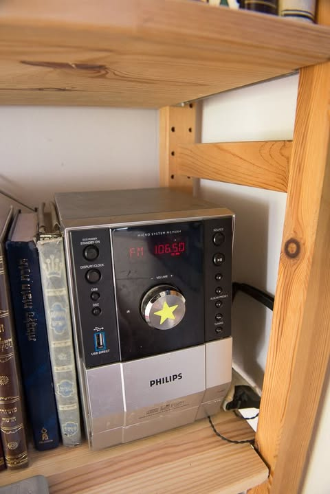
יום 100 מתוך 100 · דצמבר 2014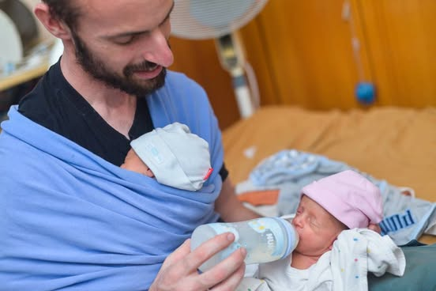
הרהורים של אבות · 2015בסוף 2014 הוא כתב 18,000 מילים על חייו. נסגר משהו. נפתח משהו אחר.
" אני אדם חכם. זו אמנם נחשבת אחת ההצהרות היותר גאוותניות עלי אדמות, אבל אין מה לעשות — זו תובנה שאני חי איתה ביומיום. ההנחה שאני חכם, משם הכל מתחיל.
" בגיל 17 עברתי קפיצה. טלטלה שהתחילה מתוכי. בשפה הרווחת המילה שמתארת את זה הכי קרוב היא "הארה". מבול לא יאומן של תובנות חדשות בקצב מהיר, חכמה ששוטפת אותי. ולאחר מכן — כשהפיתוי לחכמה לשכרון גדלות ניצח — איבדתי שליטה.
" משהו שעוזר לי ואולי יועיל למופרעי קשב נוספים: להגיד בקול רם את הצעדים הבאים שאני מתכנן לעשות. "עכשיו אני מתלבש ואחר כך לוקח את המפתח של הדואר ויוצא מהבית." לתת תוקף לכיוון אחד ברור.
Father & Teacher
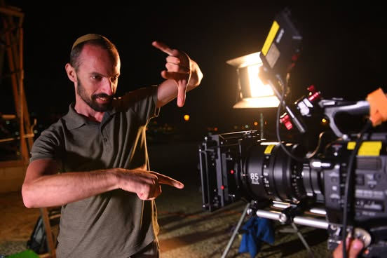
מחשבות עמוקות · 2018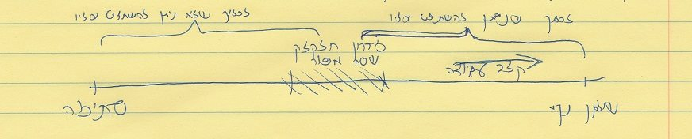
חיים · 2016המורה נולד. שפה נבואית, פסוקים שוצפים. חינוך ביתי, יהדות עמוקה, תובנות על פרנסה.
" מי שאמר עלי כי אינני מקצועי — יפה אמר, בודאי שאיני. הרי מקצוע פירושו "צד" ואי אפשר לנו לתאר בשכלנו איש שיש בו רק צד אחד. אלא החיים פועמים, שוצפים, מטלטלים, וביחוד אצל מי שמבקש לפעול מכוחם ולמענם.
" הצניעות, היא צנועה, היא לא מדברת הרבה, היא יושבת בפינה ורוקמת חלומות במחשבה. אין איש לוחם את מלחמתה, אין איש דובב את שיחתה.
" כל גישה במקורה נועדה לחלוש על כל המרחב, השכלי והרגשי, ולבנות לעצמה את עולמה האותנטי והייחודי. עצם העמדתה על ציר אחד עם עוד גישה חברה לה — עושה לה עוול גדול.
The Passage
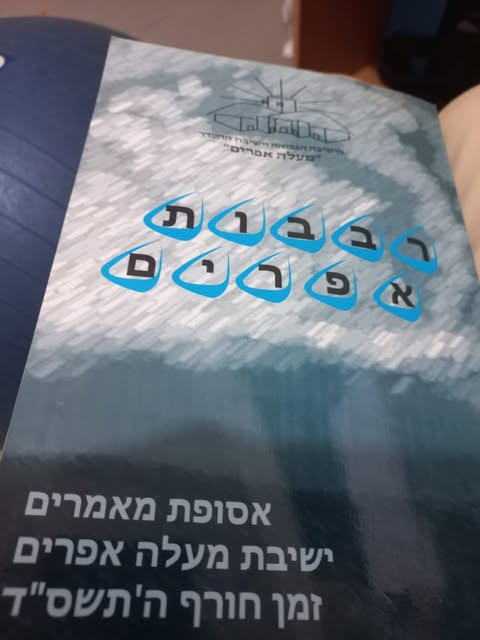
#פרקי_חיים — גיל 17 · 2021משהו מתעורר. בסוף 2022, לראשונה, מרגש לעמוד ולהרצות על AI.
" מסר כל כך חשוב שגזרתי מסרטון. הוא מדבר על התנהלות מתוך פחד לעומת התנהלות מתוך אמונה, בדרך להצלחה. 98% מהאנשים פועלים מתוך פחד.
" לא לגמרי ברור לי למה אבל מרגש אותי לעמוד ולהרצות על נושאים שקרובים לליבי. הפעם בנושא "בינה מלאכותית" בפני בית התוכנה CloseApp.
" אני מסתכל על זה ככה: הנשמה שבתוכי תבעה גוף. הגוף הנוכחי לא מילא את הצרכים שלה. והיא תבעה גוף חדש, בעיקר זך יותר ושקוף יותר, שלא יצמצם אותה.
The Awakening
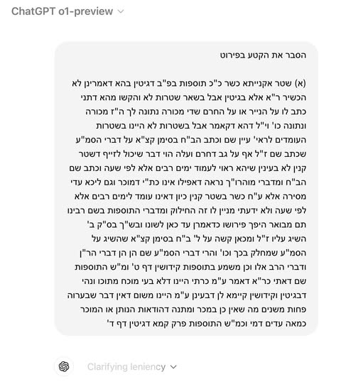
תות מול קלוד ראש בראש · 2024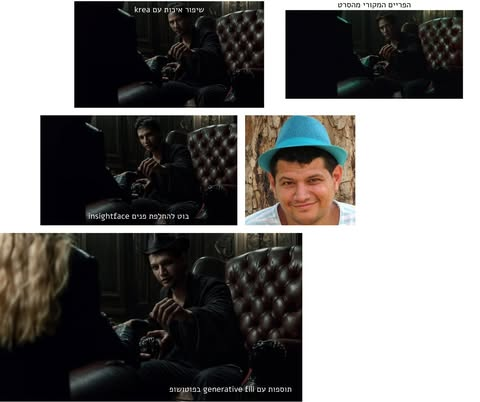
תהליכים אמיתיים · 2024הפיבוט הושלם. לא החלפה — מיקוד. כל מה שהיה מצא שדה שמכיל את הכל.
" האם דוין יכול להחליף מתכנת (כבר עכשיו...)? על פי התעריף של מליון טוקנים ב-60$ — המחיר של שעת עבודה הוא 3.4 דולר. בהנחה שהוא עובד עם GPT-4.
" לאלחנן יש משהו אחר — יש לו רצון ויש לו דמיון. ולא לכל אחד יש. רצון ודמיון — זה מה שצריך היום.
" GraphRAG: שילוב של גרף עם RAG. נועד לתת לנו פתרון איכותי כאשר אנו רוצים שמודל שפה יוכל לענות על שאלות שנוגעות לידע מדומיין פרטי — כל ידע שאינו ה"ידע הכללי" שהמודלים מכירים.
The Builder
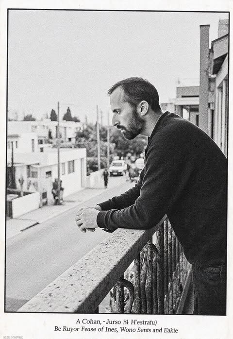
ללמד אנשים ללא רקע בקוד לבנות אפליקציות · 2025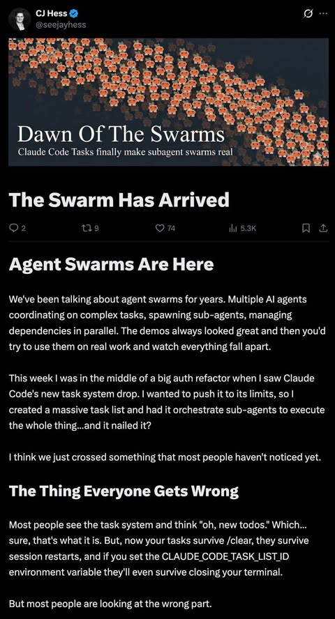
נחילים של סוכנים · 2026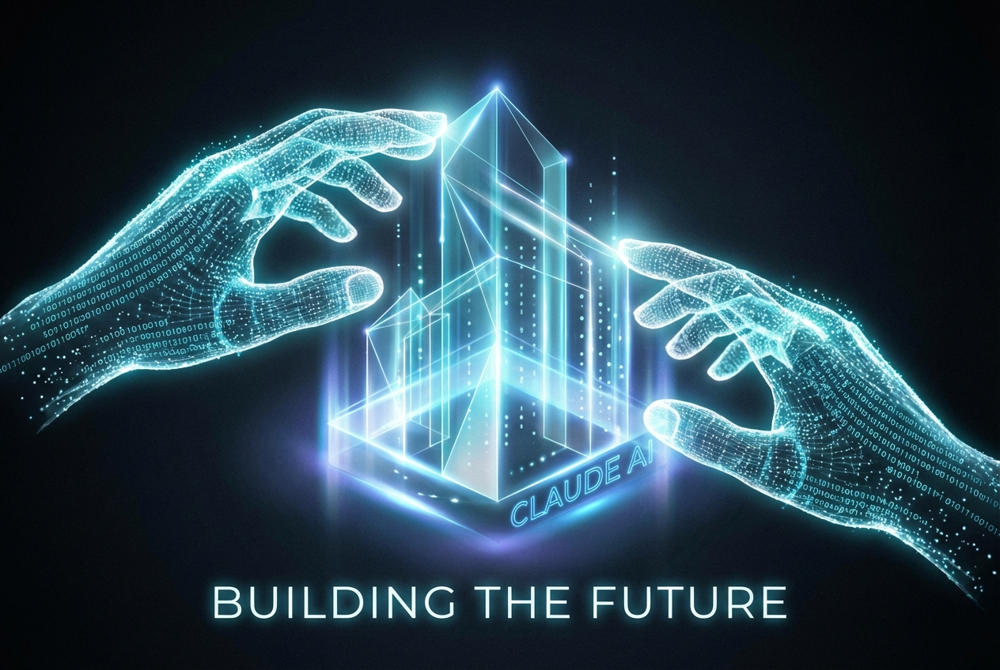
הבנאיילד שבגיל 3 נמשך לאלקטרוניקה — 40 שנה אחר כך בונה סוכנים.
" ראשית, הסוכנים הגיעו. כאלה שיש להם מחשב וטרמינל ומערכת קבצים ואינטרנט. המשלוח מנות שלי זה לנסות לתת לכם את מה שאני יודע על קלוד קוד וסוכנים כלליים.
"
מרגש אותי העתיד
מה שעוד לא קרה
הרגע שהוא נולד
" שוק העבודה ירגיש טלטלה משמעותית בעוד חודשים ספורים. זו לא תחזית שמתבססת על קצב גדילה בלבד. זה מה שאנחנו רואים עכשיו, ביום-יום, בשטח.
ממצאים שאף קורא בודד לא יכול היה לראות
17 שנה של מאבק עם אותה סתירה: ראיית-הכל מול חוסר-יכולת-לסיים. בין החזון לתוצר — ה-ADHD. "ערימה מפוארת של כשלונות שמסתכמת לדבר אחד פשוט: חוסר אמון בעצמי שאני יכול לסיים." — 2015.
Claude לקח את ה-middle. לראשונה בחייו, הפער בין החזון למציאות נסגר — לא על ידי שינוי עצמי, אלא על ידי שיתוף-פעולה עם כלי שמשלים בדיוק את מה שחסר.
אחדות הפענוח והמסירה
הוא לא מבין ואז מלמד — הוא מבין תוך כדי מלמד.
16,843 הפוסטים הם לא יומן — הם המחשבה עצמה.
em-dash מגיע עם בגרות אינטלקטואלית — סמל של מי שיודע שהוא כותב ויודע שנקרא
"אני לא אדם שמתמחה בציטוטים אלא מתבונן בדברים ובסופו של דבר אומר מה שנראה לי הכי אמיתי והכי מאומת, ולרוב זה מגיע אחרי מחשבות עמוקות בטווח של שנים."— פברואר 2026 · "סינגולריות"
היפומניה · שיא יצירתי · קריסה · כתיבה אנליטית · גל הבא — תועד 4 פעמים
2009 · · · · · 2026
מחקר זה בוצע על ידי Claude Sonnet · מרץ 2026 · 50MB של מחשבות